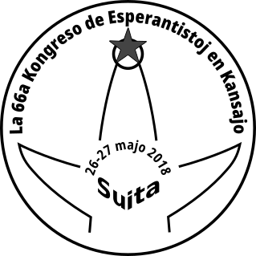
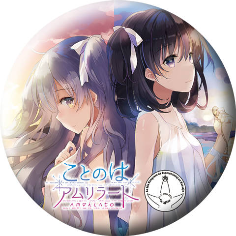

第66回 関西エスペラント大会にて
ことのはアムリラート座談会開催決定!!


ことのはアムリラート(表)座談会(仮)へのご招待
■日 程：2018年5月26日(土)
■時 間：
13:00～14:20予定
■会 場：
吹田市立 千里山コミュニティセンター
〒565-0844 吹田市千里山霧が丘22-1(BiVi 千里山3階)(阪急千里線 千里山駅東口を出てすぐ目の前)
応募終了しました
募集は5月18日(金)で〆切、抽選→5月19日(土)に『メールにて当落のお知らせ』をお送りします。
※参加特典として『イベント記念缶バッチ』をご用意いたします。(当日会場でのお渡しになります)

出展情報
26日（1日目）
09:00～12:00JEIエスペラント学力検定試験
Kvalifikaj Ekzamenoj de Esperanto laŭ JEI
【説明】
一般財団法人日本エスペラント協会の検定試験です。
事前の申し込みをした受験者だけが入場できます。
Oni okazigas la ekzamenon laŭ Japana Esperanto-Instituto.
Rajtas ĉeesti nur ekzamenatoj anticipe aliĝintaj.
13:00～14:20
分科会：「かんさいアムリラート座談会」
Faka kunsido: Kansaja renkontiĝo de amikoj pri “Kotonoha-Amrilato”
【説明】
エスペラントをおりまぜた
アドベンチャーゲーム「ことのはアムリラート」発表からまもなく1年。
エスペラントの内の人、外の人の視点でなにが おこったり、
おこっているのかを振り返る座談会
同ゲームのシナリオライター J-MENT氏が登場。事前申し込み者が優先的に入場します。
Baldaŭ pasos unu jaro post publikigo de la aventura ludo “Kotonoha-Amrilato”, aplikanta Esperanton en sia imagita mondo. La kunsido temos de vidpunktoj ekster/en la esperantujo, kio okazis kaj okazas ĉirkaŭ la ludo. Gaste ĉeestos la scenariisto, s-ro J-MENT.
Unuavice rajtas ĉeesti ludamikoj invititaj de la respondeculo de la kunsido. Duavice la aliaj homoj.
※こちらはご招待枠（18日締切）でも参加できるイベントとなります。
サロン出店：「たいやき屋」（de SukeraSparo）
【説明】
エスペラントをおりまぜた アドベンチャーゲーム「ことのはアムリラート」に関連する
グッズ類の展示と、座談会招待者や大会参加者向けの頒布をおこないます。
27日（2日目）
13:00～14:20分科会：「エスペラントとアムリラートを考える」
Faka kunsido: Ni analizu, kio estas "Kotonoha Amrilato" por esperantujo.
【説明】
エスペラントをおりまぜた
アドベンチャーゲーム「ことのはアムリラート」発表からまもなく1年。
同ゲームのシナリオライター J-MENT氏を招き、エスペラント界内外の視点から、
エスペラント広報活動などの事柄について考え合います。
Baldaŭ pasos unu jaro post publikigo de la aventura ludo “Kotonoha-Amrilato”, aplikanta Esperanton en sia imagita mondo. Oni diskutos de ekster/en vidpunkdoj de esperantujo pri Esperanto-informado kaj aliaj aferoj pri E-movado, invitante s-ron J-MENT, la scenariisto de la ludo.
※こちらは関西エスペラント大会参加者のみのイベントとなります。
サロン出店：「たいやき屋」（de SukeraSparo）
出展商品リスト
{kind=link}
配布情報
ルカ先生のブックカバー
{kind=link}